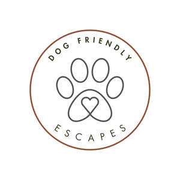

Trade Mark Journal No.2025/016 18 April 2025
UK00004182735 1 April 2025 (39,43)

- Class 39
- Organisation of holiday travel; Arranging holiday travel; Booking of holiday travel and tours; Holiday travel reservation services; Arranging of holiday transport; Package holiday services for arranging travel; Arranging and booking of travel for package holidays; Arranging of excursions as part of package holidays; Arranging of sightseeing tours as part of package holidays; Arranging car hire as part of package holidays; Travel agency services for arranging holiday travel; Planning and arranging of sightseeing tours and day trips; Arranging and booking of day trips; Arranging of excursions, day trips and sightseeing tours; Arranging of day trips; Booking of travel through tourist offices.
- Class 43
- Holiday lodgings; Rental of holiday accommodation; Rental of holiday homes; Letting of holiday accommodation; Arranging of holiday accommodation; Arranging holiday accommodation; Rental of holiday cabins; Rating holiday accommodation; Holiday accommodation services; Arranging of accommodation for holiday makers; Provision of holiday accommodation; Holiday planning services [accommodation]; Reservation of temporary accommodation in the nature of holiday homes; Booking services for holiday accommodation; Camp services (Holiday -) [lodging]; Holiday camp services [lodging]; Rental of temporary accommodation in holiday homes and flats; Services for reserving holiday accommodation; Providing temporary accommodation in holiday homes; Booking agency services for holiday accommodation; Providing temporary accommodation in holiday flats; Rental of vacation accommodation; Hotels, hostels and boarding houses, holiday and tourist accommodation; Providing temporary lodging at holiday camps; Temporary accommodation services provided by holiday camps; Providing on-line information relating to holiday accommodation reservations; Tourist camp services [accommodation]; Tourist home services; Homes (Tourist -); Reservation of tourist accommodation; Tourist homes; Rental of temporary accommodation; Accommodation (Rental of temporary -); Rental of accommodation [temporary]; Arranging of accommodation for tourists; Booking of accommodation for travellers; Tourist agency services for booking accommodation; Accommodation booking agency services [time share].
Noonvares Farm Ltd